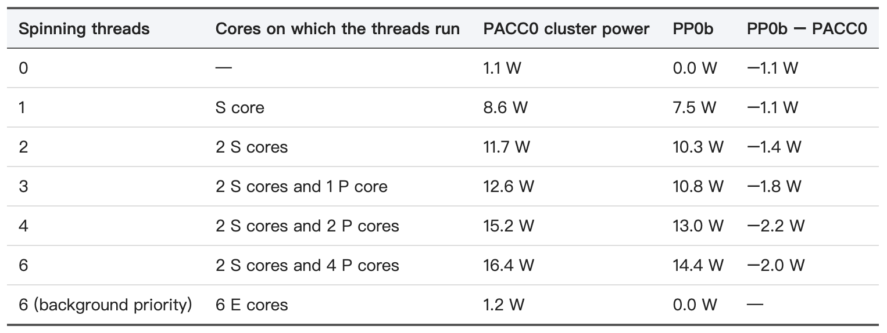
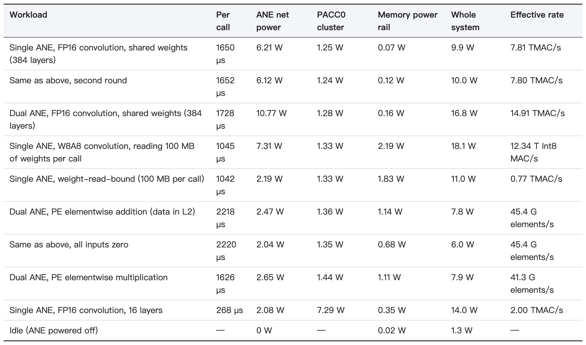
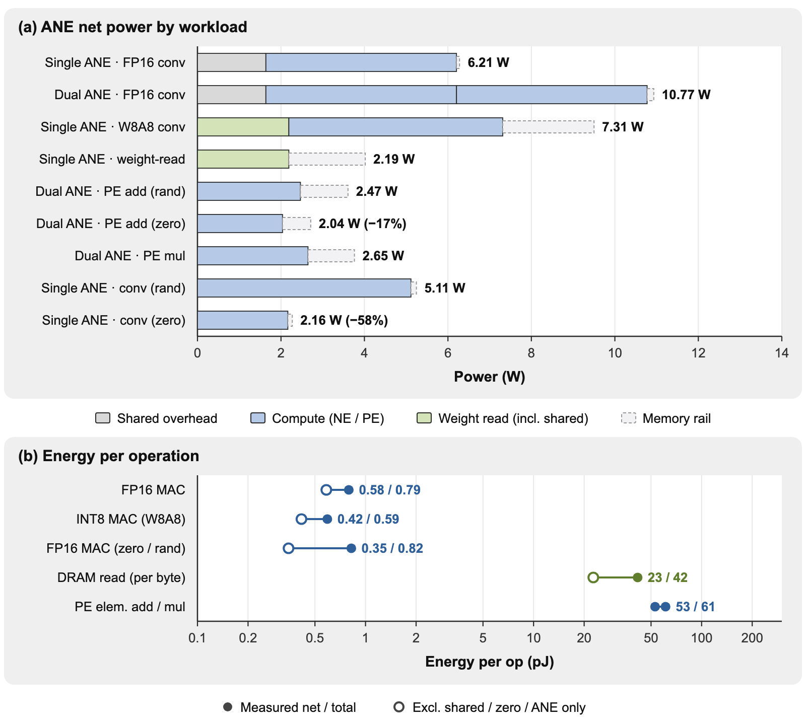
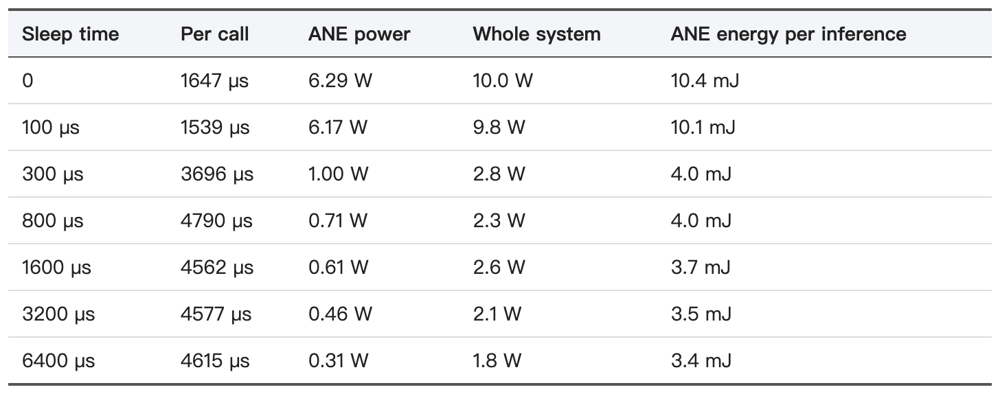
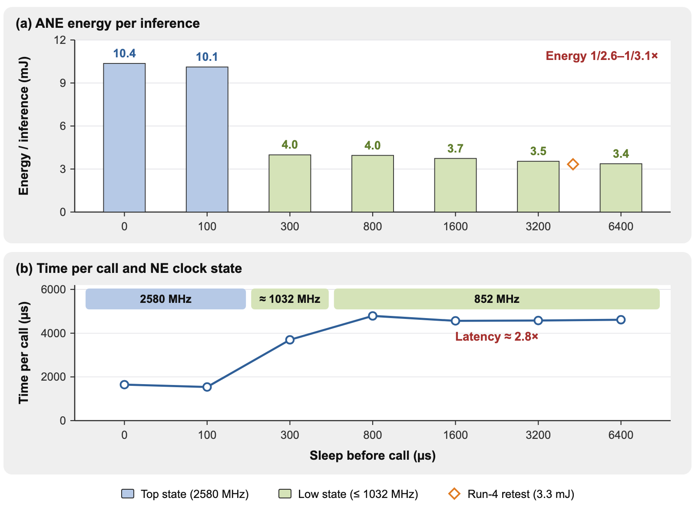
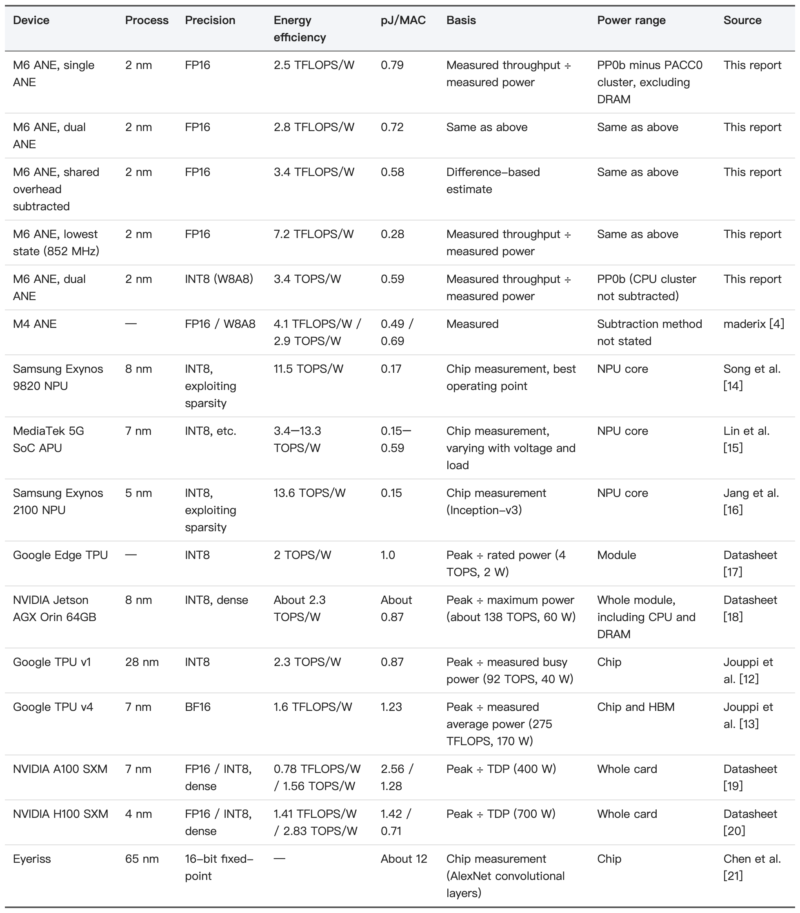

This post is chapter 13 of the report "Microarchitecture of the Apple M6 Neural Engine: An Empirical Study Based on Compiled Artifacts, Execution Traces, and Power Measurements", reproduced unchanged. Full report: web; data and tools: GitHub. Section, figure and table numbers follow the report.
This chapter analyzes the power characteristics of the ANE and its principal sources of energy consumption. Compared with the preceding chapters, this chapter faces a more fundamental difficulty: on the M6 there is no power rail that supplies only the ANE and can be read separately. We therefore first establish a measurement method, and then decompose the power into the parts attributable to multiply-accumulate (MAC) operations, elementwise operations, data movement, and the portion shared by the two ANEs. The main conclusions of this chapter are six. First, the SMC power rail PP0b supplies power to both the ANE and the S and P cores of the CPU. After the power of the CPU cluster is subtracted, a single ANE draws about 6.2 W at full load, two ANEs draw about 10.8 W at full load, and the ANE draws 0 W when idle. Second, there is a shared overhead of about 1.6 W between the two ANEs. After this portion is subtracted, an FP16 MAC consumes about 0.58 pJ, and an INT8 MAC consumes about 70–80% of that. Third, an elementwise operation consumes about 50–60 pJ per element, and reading data from DRAM consumes about 42 pJ/B. Fourth, when the CLPC selects a low state, the ANE energy per inference is about one-third of that at the top state. Fifth, when a small model is called at high frequency, most of the energy is consumed on the host CPU side rather than in the ANE itself. Sixth, when all activations of a convolution are zero, the ANE power decreases by about 58% on both the M6 and the M4 while the latency is unchanged. When the activations are partially zero, the power saving increases monotonically with the fraction of zeros, but it is lower than expected.
13.1 Measurement Method
13.1.1 Locating the ANE Power Rail
powermetrics cannot report the power of the ANE on the M6 and macOS version used in this report. At full load, it reports a CPU power of 0 mW and has no entry for the ANE, and the energy model group of IOReport likewise reports only the energy of the GPU 〔IOReport〕. We therefore read the power rails in the SMC instead. The SMC provides 59 power keys beginning with P, which can be read through the AppleSMC user client without root privileges (tool: smcpower.c) 〔SMC〕. Comparing the idle state with the state of dual-ANE full load, PP0b reads 0.00 W when idle and 11.3 W under dual-ANE full load, so it varies markedly with the ANE load.
However, PP0b is not a power rail dedicated to the ANE. While the ANE was idle, we ran several CPU threads in spin loops, and we simultaneously read PP0b, the energy histogram of the CPU clusters in IOReport, and the activity of each core. The results are shown in Table 13-1 〔SMC, IOReport〕.
Table 13-1. PP0b readings with the CPU spinning (ANE idle)

When the ANE is completely idle, PP0b reaches 7.5 W as soon as a single thread spins on an S core, and it remains at 0 W when the threads are confined to E cores. This shows that PP0b supplies power to both the ANE and the PACC0 cluster of the CPU. The CPU of the M6 contains 2 S cores, 4 P cores, and 6 E cores. The S cores and P cores belong to the PACC0 cluster, whereas the E cores belong to a different cluster that is not on this power rail. No other SMC key contains a channel that varies with the ANE alone. We performed the same test on the M4, and the result was the same: PP0b supplies power to both the ANE and the P-core cluster 〔SMC, IOReport〕.
13.1.2 Subtracting the Power of the CPU Cluster
On this basis, we compute the net power of the ANE as follows. Once per second, we read PP0b and the power histogram of the PACC0 cluster in IOReport, with the histogram averaged using weights given by the residence time in each state. We take the difference between the two, and subtract the baseline of the same difference when the ANE is powered off (about −1.1 to −1.2 W) (tools: pclus.c, power_parts.py, power_parts_fit.py):
ANE net power = (PP0b − PACC0 cluster power) − the same difference with the ANE powered off
This method has two sources of error. First, the power histogram in IOReport is quantized in 1 W steps, so the error of a single reading is about ±0.5 W, and the error is substantially reduced by long-term averaging. Second, Table 13-1 shows that the difference between PP0b and the PACC0 cluster is not constant. It is about −1.1 to −1.4 W when only S cores are busy, and about −2 W when P cores are also busy. When the ANE is at full load and the calling thread is blocked for most of the time, the power of the PACC0 cluster is only 1.2–1.4 W, and the error of the baseline is within ±0.3 W. If the CPU is also busy while the ANE is running, the error of the baseline may reach about 1 W. When reporting the results for each load, this chapter also gives the power of the PACC0 cluster, so that readers can judge the magnitude of the error.
In addition, we read two auxiliary power rails. The sum of PP2b and PP4b rises markedly when DRAM is read: it is about 2 W when the workload is weight-read-bound and less than 0.1 W when it is compute-bound, with the PE workload as an exception (see Section 13.3). We speculate that this sum supplies power to the memory controller and DRAM, and we refer to it below as the memory power rail. PSTR is the power of the whole system 〔SMC, inferred〕. The SMC readings are refreshed only about once per second, so each workload was run continuously for about 12 s, and the average was taken from 4 s after the start of the workload to 0.3 s before its end. This chapter also uses another set of measurements that read only PP0b, during which the CPU cluster remained close to idle; we refer to these below as direct-read PP0b measurements. The energy per MAC is defined as the net power of the ANE divided by the effective MAC rate. The effective rate is calculated by dividing the amount of compute of the model by the time per call (including host overhead). The energy per MAC is therefore the total ANE energy, including all components inside the ANE, amortized over each effective MAC.
13.2 Power by Workload Class
Table 13-2 gives the net power of the ANE for each workload class after subtracting the power of the CPU cluster (data: power_parts4/) 〔SMC, IOReport〕.
Table 13-2. Power of each workload class

Except for the small 16-layer model, the power of the PACC0 cluster during each workload is only 1.2–1.4 W, close to the idle level, so the error in the ANE net power for these rows is within ±0.3 W. When compute-bound, the ANE power is about 6.2 W for a single ANE and about 10.8 W for dual ANEs. Based on the effective rate, the energy efficiency is about 2.5 TFLOPS/W for a single ANE and about 2.8 TFLOPS/W for dual ANEs. When idle, the ANE power is 0 W, consistent with the powered-off behavior described in Section 12.5.
Using direct-read PP0b measurements, we compared the energy efficiency of W8A8 and FP16 on the same network (48 layers, 512 channels, 32×32, with different weights in each layer, dual ANE; this is the 48-layer network in Table 7-12). In this round, the throughput of W8A8 was 54% higher than that of FP16. For the same network, Table 7-12 gives 39%; the two values come from different rounds and carry some error. The PP0b power was only about 10% higher, so the energy efficiency was about 1.4 times that of FP16 (3.4 TOPS/W versus 2.45 TFLOPS/W) (data: power_smc.txt) 〔SMC〕. The CPU cluster was close to idle during these workloads. According to the analysis in Section 13.1.2, the difference between PP0b and the ANE net power is within ±0.3 W, so this comparison still holds.
13.3 Decomposition of Power
Because the ANE has no readable per-component power, we decompose the power by comparing differences between workloads. Each of the following items is an estimate based on differences 〔SMC, inferred〕.
We first consider the shared overhead between the two ANEs. The power under dual-ANE full load (10.77 W) is less than twice the power under single-ANE full load (6.21 W), with a difference of about 1.6 W. This indicates that as long as one ANE is working, about 1.6 W of power is shared by the two ANEs, and the second ANE does not need to incur it again. We speculate that this portion arises from the interconnect and clock shared by the two ANEs, or from the shared cluster in the CLPC (Section 11.3), but no per-component power readings are available to confirm this. After subtracting the shared overhead, the compute portion of each ANE is about 4.6 W, which amortizes to about 0.58 pJ per FP16 MAC. Without this subtraction, the single-ANE total is about 0.79 pJ/MAC and the dual-ANE total is about 0.72 pJ/MAC.
Next, we consider INT8 MACs. Each call of the W8A8 workload reads about 100 MB of weights from DRAM, so the power of reading weights must first be subtracted. The weight-read-bound workload reads the same amount of weights at a similar rate, and its ANE net power is about 2.2 W. Subtracting this from the W8A8 workload leaves about 5.1 W. Both workloads use only one ANE, so under the model above the shared overhead is present in both and cancels in the subtraction. The 5.1 W is therefore the power of the INT8 computation itself, which amortizes to about 0.42 pJ/MAC at 12.34 T Int8 MAC/s. This should be compared with the FP16 value of 0.58 pJ/MAC after the shared overhead has been subtracted; it is about 71% of that value. The weight-read-bound workload itself also contains a small amount of computation (0.77 TMAC/s), and the subtraction also removes the power of this computation. If we add back about 0.45 W, computed from 0.58 pJ per FP16 MAC, the INT8 value becomes about 0.45 pJ/MAC, which is 77% of FP16. The direct-read PP0b measurement gives about 77% under the same convention (adding back the computation in the weight-read workload) as well. As a cross-check, without any subtraction, the ANE net power of the W8A8 workload amortizes to 0.59 pJ per MAC, and that of FP16 to 0.79 pJ, giving a ratio of about 75%. Taken together, we estimate that the energy per INT8 MAC is about 70–80% of that of FP16. The INT8 throughput is about 1.58 times that of FP16, while the power is only about 18% higher, so the energy efficiency is about 1.3 times that of FP16. This is similar to the result above that the energy efficiency of W8A8 is about 1.4 times that of FP16, although the two sets of workloads differ.
The power of reading DRAM can be separated from the weight-read-bound workload. The weight-read-bound workload reads weights at about 96.6 GB/s, and the sum of the ANE net power and the memory power rail is about 4.0 W, which corresponds to about 42 pJ per byte. Of this, the memory power rail accounts for about 19 pJ/B, and the ANE net power (including DMA and a small amount of computation) accounts for no more than about 23 pJ/B.
Power measurement of elementwise operations requires separate treatment. In the experiment, the input and output data of the PE elementwise addition both reside in L2 and generate no significant DRAM traffic. The ANE net power for this row was computed using the powered-off baseline of an adjacent run in the same round, because the powered-off baseline recorded in this run itself (−1.71 W) deviates markedly from the other runs in the same round (−1.12 to −1.20 W) 〔SMC〕. The energy per element was computed as "the full-load reading minus the powered-on idle reading of the same run." The full-load reading and the powered-on idle reading share the same baseline, so this anomaly does not affect the result. The energy per element is about 53 pJ for elementwise addition and about 61 pJ for elementwise multiplication. Each element reads two operands from L2 and writes back one result, so this energy comes mainly from on-chip data movement. Relative to the 0.58 pJ per FP16 MAC after shared overhead is subtracted, it corresponds to about 90–105 FP16 MACs. The PE workload also increases the memory power rail by about 1.1 W, whereas IOReport shows that the DRAM read bandwidth is almost zero in this case; the reason is unclear. Combined with the observation in Section 11.4 that the PE workload raises the voltage of the SoC interconnect, this portion of power may come from traffic in the interconnect or the system-level cache 〔inferred〕.
The values of the input data also affect power. When all PE inputs are zero, the ANE power decreases by about 0.42–0.45 W (about 17%). This value agrees between the two alternating measurements in power_parts2/ and in power_parts4, and the memory power rail decreases by about 40% at the same time. This is consistent with the rule that "dynamic power decreases when data do not toggle" 〔SMC〕.
When measuring the effect of zero activations, the bias of the model must be zero. With a nonzero bias and ReLU between layers, the activations converge after several tens of layers to a set of values determined by the bias, so an all-zero input affects only the first few layers. We therefore used a 1×1 convolution chain with zero bias (512 channels, 1×128, 128 layers; when the input is all zero, the input of every layer is zero). We alternated between random inputs, all-zero inputs, and inputs with "one nonzero constant per channel," with two rounds for each, and computed the power as in Table 13-2 (data: power_zero/) 〔SMC, IOReport〕. With random inputs, each call took about 690 µs and the ANE net power was 5.11 W. With all-zero inputs, the latency was unchanged and the power decreased to 2.15–2.18 W, a reduction of about 58%. This corresponds to a decrease in energy per MAC from about 0.82 pJ to about 0.35 pJ. With one nonzero constant per channel, the power was 5.0–5.2 W, the same as with random inputs. These results show that the dynamic power of the ANE decreases substantially when it encounters zero operands, but it does not skip these MAC operations (Section 7.5). In other words, zero activations save power but not time. The saving comes from the zero values themselves, rather than from activations being spatially constant 〔SMC, timing〕.
We repeated this measurement on the M4 (data: power_gate_m4/). The SMC readings on the M4 are updated about once per second and are instantaneous, so they fluctuate widely under steady load. Each segment was therefore extended to 60 s, two passes were run in alternating reverse order, the machine was prevented from sleeping during the measurements, and the call latency was checked segment by segment to exclude ramp-down. Two segments with anomalous powered-off baselines were computed using the normal values of the same round 〔SMC, timing〕. The results agree with those of the M6. With random inputs, the ANE net power was 5.08–5.32 W, and with all-zero inputs it was 2.14–2.18 W, a reduction of about 58%. With inputs of all −0 (bit pattern 0x8000), the reduction was similarly about 58%. With one nonzero constant per channel, the power was the same as with random inputs 〔SMC〕.
When only part of the activations are zero, the ANE power generally decreases as the fraction of zeros increases. We used the masking model of Section 7.5, with the fraction of zeros in each layer's input and their spatial arrangement fixed (data: power_gate_m4/, power_pair_m4/). Because the masking operation adds one multiplication per layer, the absolute power of this set of models is higher than in the all-zero experiments described above. However, the models share exactly the same graph structure and weights, and the single-call time of each segment is 718–738 µs, so the power at different zero fractions can be compared directly. For randomly distributed zeros, when the fraction of zeros in each layer's input is 0%, 50%, 75%, and 90%, the ANE net power is about 8.24 W, 5.99 W, 4.33 W, and 3.03 W, respectively. Extrapolated to 100% zeros, it is about 2.0 W. If the power difference between 0% and all-zero is taken as the saveable portion, then the zero fractions of 50%, 75%, and 90% realize about 36%, 63%, and 83% of the saveable power, respectively. These values are lower than the values expected from linear scaling with the zero fraction (50%, 75%, and 90%). The measured energy saving is about 7–14 percentage points below the linear expectation, and this deviation is more pronounced at lower zero fractions 〔SMC〕.
To test whether the power saving requires adjacent zeros to occur in pairs, we rearranged the zeros at a fixed 50% fraction in each layer. Zeros were paired along the channel or width direction, arranged either aligned (2k, 2k+1) or offset by one (2k+1, 2k+2). If the hardware gates in units of two elements, the aligned pairs should save about 1 W more than the offset pairs. If the circuit does not toggle only when the operands of two adjacent cycles are both zero, the paired zeros should save noticeably more power than randomly distributed zeros. The measured difference between aligned and offset arrangements is only 0.04–0.14 W, and the paired arrangement (5.78–5.92 W) is only 1–4% lower than the random arrangement (5.99 W). Both mechanisms can therefore be ruled out 〔SMC, inferred〕. Consequently, the power saving from zero activations is largely elementwise: each zero saves its own share, independently of neighboring elements. Additional savings appear only when zeros occur in large blocks. When half of the channels are entirely zero, the power is 5.07 W, about 0.9 W lower than with randomly distributed zeros at the same fraction. We speculate that the upstream data path or the L2 reads also save power in this case 〔inferred〕. The specific mechanism of the elementwise saving may be that the hardware turns off the clock of that lane upon detecting a zero, or that the multiplier rarely toggles internally when one multiplicand is zero. Power measurements alone cannot distinguish these possibilities. The compiler has a dedicated zero-weight detection mechanism on the weight side (Section 7.5), but on the activation side we have not found a corresponding field 〔compiler, inferred〕.
Finally, we consider the case where the ANE is powered on with no task. After the workload ends and before the firmware processor is powered off (Section 12.5), the ANE is powered on but has no task. In this state, the readings of the ANE net power lie between 0 and 0.6 W, which is within the measurement error. In the direct-read PP0b measurements, this reading does not exceed 0.05 W (data: power_parts2/). We speculate that the compute array turns off its clock or power quickly between tasks, and that the power of the firmware processor itself is below the resolution of the SMC 〔inferred〕. Figure 13-1 shows the breakdown of the ANE power.

Figure 13-1. Breakdown of ANE power. (a) ANE net power for each workload class after subtracting the CPU cluster; the dashed light-gray segment indicates the increase in the memory power rail over the same period, and for FP16 convolution, the difference between the dual-ANE power and twice the single-ANE power is separated as a shared overhead of about 1.6 W. (b) Energy per MAC, per byte read from DRAM, and per PE element, estimated from differences between workloads (data: power_parts4/, power_zero/).
13.4 DVFS State and Energy per Inference
Chapter 12 shows that when the host inserts idle time between calls, the CLPC lowers the NE DVFS state of the ANE. Table 13-3 gives the power and the energy per inference of the same single-ANE model (1.29 × 10¹⁰ MACs per inference) at different sleep times. This set of data comes from direct-read PP0b measurements. In a re-measurement with the CPU cluster subtracted, we measured one point at a sleep time of 3200 µs, and the ANE net power was 0.43 W, which agrees with the value of 0.46 W in the table (data: power_parts/, power_parts2/, power_parts4/) 〔SMC〕.
Table 13-3. Sleep time before each call and ANE energy per inference

Once an idle gap of about 300 µs or more is inserted between calls, the CLPC no longer drives the ANE to the top state. The per-call time increases by a factor of 2.2–2.9, and the ANE energy per inference falls to between 1/2.6 and 1/3.1 of its value at the top state. According to the measurements in Section 12.2, at a sleep time of 300 µs the ANE runs at about 1032 MHz, and at longer sleep times it runs at the lowest state of 852 MHz. Under the rule that dynamic power is proportional to the product of frequency and the square of voltage, the energy per inference depends mainly on voltage, and the reduction in energy at low states comes mainly from the lower voltage. The factor by which energy decreases is close to the factor by which latency increases, but this similarity is a numerical coincidence 〔inferred〕. This result also indicates that the static power of the ANE is small. If static power accounted for a large share, running at a low state for a long time would accumulate static energy and cancel the savings from lower voltage, so that "finish quickly and power off" would save more energy. The measurements show the opposite. Figure 13-2 shows the ANE energy per inference and the call interval.

Figure 13-2. ANE energy per inference and call interval. For the same single-ANE FP16 model with a sleep of 0–6400 µs before each call: (a) ANE energy per inference, computed as ANE power × (per-call time + sleep time); diamonds show the re-measurement at a sleep of 3200 µs with the CPU cluster subtracted; (b) per-call time and the corresponding NE DVFS state (data as in Table 13-3).
13.5 Fixed Energy per Call
For small models called at high frequency, the distribution of energy differs entirely from that of large models. The 16-layer small model in Table 13-2 takes only 268 µs per call, or about 3700 calls per second. In this case the ANE net power is only 2.08 W, whereas the power of the PACC0 cluster is as high as 7.29 W. In other words, the Core ML calling thread causes the CPU cluster to draw about 6 W more than when idle, which amortizes to about 1.6 mJ per call. On the other hand, using the value of about 0.79 pJ/MAC for the 384-layer model in Table 13-2, the computation of the 16-layer model requires about 0.43 mJ per call, whereas the actual ANE energy per call is about 0.56 mJ. The fixed overhead of the ANE itself per call is therefore about 0.13 mJ 〔SMC, IOReport〕. At this measurement point the CPU cluster was under high load. According to Section 13.1.2, the error of the baseline when the CPU cluster is subtracted may reach about 1 W, which amortizes to about ±0.27 mJ per call and is larger than the 0.13 mJ itself. Therefore, this value shows only that the fixed overhead of the ANE does not exceed about 0.4 mJ.
Accordingly, the reason that frequent small calls consume substantial energy lies mainly not in the ANE but in the calling overhead on the host CPU side. For each call, the CPU must prepare the request, wait for the completion notification, and wake the calling thread (Section 6.5). The energy of this work is at least about four times the fixed overhead of the ANE.
13.6 Power Model of the Compiler
The performance-model CSV described in Section 7.1 contains a column power(W). We disassembled the function perfmodel::EnginePerf::ComputePowerMetric that generates this column, and found that it computes only the energy of memory accesses. The power equals the number of bytes accessed through the three paths of Tile DMA and the Kernel DMA, multiplied by the energy per byte, divided by the estimated execution time. The energy per byte takes only two values. When the data volume of a given path does not exceed the capacity of the system-level cache (16 MiB) and the cache flag is set, it is taken as 10 pJ/B (treated as a cache hit); otherwise it is taken as 50 pJ/B (treated as a DRAM access). These two constants are taken from offset 0x890 of the HAL parameter table 〔compiler, HAL〕. We checked this formula against specific rows of the CSV, and in each case the result was exactly 50.0 pJ/B. It follows that the compiler does not build power models for the MAC array, the L2, or the PE, so the power(W) column cannot be used to decompose the power of the ANE. On the other hand, the 50 pJ/B used by the compiler is consistent in order of magnitude with the total energy of reading DRAM measured in this report (about 42 pJ/B).
13.7 Comparison
This section compares the energy efficiency of the M6 ANE at three levels: comparison with the M4 ANE of the previous generation, comparison with the CPU and GPU on the same chip, and comparison with NPUs and accelerators from other vendors. The comparability decreases in this order, and attention must be paid to the measurement basis used in each comparison.
13.7.1 Comparison with the M4
maderix [4] reports that the ANE of the M4 draws zero power when idle, 4.57 W at full load with FP16 (4.1 TFLOPS/W), and 12.25 W at full load with W8A8 (2.9 TOPS/W). That is, the throughput of W8A8 is 1.95 times that of FP16, while its power is 2.7 times that of FP16. The results of the M6 differ from these in two respects. First, on the M6, W8A8 is more energy-efficient than FP16 (about 1.4 times), whereas on the M4, W8A8 is less energy-efficient than FP16. Second, the FP16 energy efficiency of a single ANE on the M6 is about 2.5 TFLOPS/W, which is lower than the value for the M4 reported by maderix. Because this report found that PP0b on the M4 likewise supplies power to both the ANE and the CPU cluster, and because different studies use different power sources and subtraction methods, these values should not be compared directly. For reference, the ANE net power of the M4 ranges from about 5 to 9 W depending on the workload. The convolution models in Section 13.3 give 5.1–8.2 W, another FP16 convolution workload of a different shape gives about 8.7 W, and the ANE power reported by powermetrics over the same period is 9.6 W 〔SMC, IOReport〕. maderix reported a power of 2.8 W in Parts 2 and 3 of the series, which was later corrected in Part 4 to a reading taken with low-power mode enabled [2–4]. This also indicates that the power of the ANE is highly sensitive to the system state.
13.7.2 Comparison with the CPU and GPU on the Same Chip
On the same chip, a comparison in which the energy of the CPU and GPU performing the same operations is measured with the same method is the most convincing, because it removes differences in process, packaging, and measurement basis. For reference, a previous study used powermetrics on the M1–M4 and measured an energy efficiency of 0.21–0.46 TFLOPS/W for FP32 matrix multiplication on the GPU [22], which corresponds to about 4–10 pJ per FP32 MAC. This figure differs by a factor of about 5–12 from the FP16 energy efficiency of the M6 ANE (about 2.5 TFLOPS/W). However, the precisions differ (FP32 versus FP16), and so do the measurement methods, so the comparison can indicate only the order of magnitude.
13.7.3 Comparison with Other NPUs and Accelerators
Table 13-4 summarizes the energy efficiency of other NPUs and accelerators reported in the public literature. The data in the table all come from primary sources, including academic conference papers, vendor datasheets, and papers published by vendors. All values have been converted to TOPS/W and pJ/MAC, where one MAC is counted as two operations, so pJ/MAC = 2 ÷ TOPS/W. The "Basis" column of the table distinguishes two types of data: one is peak throughput divided by the rated power or thermal design power (TDP), and the other is measured power.
Table 13-4. Energy efficiency of the M6 ANE and other NPUs and accelerators

Mainstream NPUs in laptop and mobile platforms are not included in the table. These include the Hexagon NPU of the Qualcomm Snapdragon X Elite (45 TOPS), the NPU 4 of the Intel Lunar Lake (48 TOPS), the XDNA 2 of the AMD Ryzen AI 300 (50 TOPS), and the NPU of the MediaTek Dimensity 9400. The vendors have published only the peak INT8 throughput and the energy-efficiency ratios relative to predecessors or competitors, not the absolute power of the NPUs, so these values cannot be converted to TOPS/W. Google has also not published the throughput and power of the TPU in the Tensor chip. The MLPerf Mobile benchmark does not report energy, and it is likewise unusable for this comparison.
The values in Table 13-4 differ widely in their bases, and four points must be considered when comparing them. First, the difference between peak and measured values. The M6 data in this report are the effective throughput under realistic workloads divided by the measured power-rail power. The values in the vendor datasheets are peak throughput divided by the rated power or TDP. The former overestimates the throughput, and the latter usually overestimates the power, so the biases act in opposite directions and the net effect is uncertain. Among datacenter accelerators, the bases closest to that of this report are those of TPU v1 and TPU v4, which use measured power, but whose throughput is still peak. The ISSCC chips in the table measured both throughput and power, but the measurement scope was limited to the NPU core. Second, the difference between sparse and dense values. The TOPS values given prominently in NVIDIA datasheets are usually computed for structured sparsity, and the table converts them to dense values. The TOPS/W values in the Samsung ISSCC and ISCA papers count skipped zero-valued operations and should be regarded as best-case values. Third, the difference in power boundaries. The ISSCC papers report the power of the NPU core at the best voltage point, the Jetson figure is the power of the whole module, the TPU v4 figure includes HBM, and the net power of the ANE in this report (PP0b minus the PACC0 cluster) excludes DRAM. Relative to the TPU v4 and the Jetson, the basis of this report favors the M6. Relative to the ISSCC data, which count only the core, it disfavors the M6. Fourth, the difference in precision and process. Mobile NPU vendors mostly provide only INT8 data, and comparable FP16 data are scarce. From the 65 nm Eyeriss to modern NPUs at 4–8 nm, the energy per MAC has decreased by more than an order of magnitude, and most of this reduction comes from process advances.
Within these limitations, we can draw two conclusions with reservations.
First, the FP16 energy efficiency of the M6 ANE at the top state, about 2.5–2.8 TFLOPS/W, is of the same order as that of the H100 (1.41 TFLOPS/W) and the TPU v4 (1.6 TFLOPS/W) in datacenters, and higher than that of the A100 (0.78 TFLOPS/W). However, the INT8 energy efficiencies reported in three mobile NPU chip papers are generally higher than the measured INT8 value of the M6 at the top state (about 3.4 TOPS/W). Song et al. [14] reported at ISSCC 2019 that the NPU of the Samsung Exynos 9820 reaches 11.5 TOPS/W. Lin et al. [15] reported at ISSCC 2020 that the deep-learning accelerator in a 7 nm 5G mobile SoC from MediaTek reaches 3.4–13.3 TOPS/W. Jang et al. [16] reported at ISCA 2021 that the NPU of the Samsung Exynos 2100 reaches 13.6 TOPS/W on Inception-v3. All three values count the power of the NPU core only, and two of the Samsung papers also count skipped zero-valued operations. Part of the gap between these values and the M6 therefore arises from differences in basis.
Second, the energy efficiencies in ISSCC papers are often given as a range, such as 3.4–13.3 TOPS/W for Lin et al. [15]. Such a range reflects how the energy efficiency of the same accelerator varies with operating voltage, load, and data precision. The M6 shows a similar phenomenon: at the lowest state (852 MHz), the FP16 energy efficiency of the M6 is about 7.2 TFLOPS/W, about three times that at the top state (Section 13.4). This value falls within the range reported by Lin et al. [15]. However, the M6 value is a result at FP16 precision, and the values in that range are not necessarily at the same precision, so the two cannot simply be equated. Accordingly, a comparison of energy efficiency among NPUs depends largely on which operating point and which precision are compared. Therefore, when comparing with other NPUs, the energy efficiency of the M6 at both the top state and the lowest state should be given, with the precision stated.
13.8 Summary
The M6 has no readable power rail dedicated to the ANE. The SMC power rail PP0b supplies power to both the ANE and the S and P cores of the CPU, so the power of the ANE must be obtained after the power of the CPU cluster is subtracted. Using this method, a single ANE draws about 6.2 W at full load, dual ANEs draw about 10.8 W at full load, the shared overhead between them is about 1.6 W, and the ANE draws 0 W when idle. After the shared overhead is subtracted, an FP16 MAC consumes about 0.58 pJ, and an INT8 MAC consumes about 70–80% of that. An elementwise PE operation consumes about 50–60 pJ per element, mainly due to on-chip data movement, and reading data from DRAM consumes about 42 pJ/B. When all activations of a convolution are zero, the ANE power decreases by about 58% on both the M6 and the M4, while the latency is unchanged. When the activations are partially zero, the power saving increases monotonically with the fraction of zeros (but is lower than proportional expectation), is independent of whether the zeros occur in pairs, and yields additional savings when zeros occur in large blocks. When the CLPC selects a low state, the energy per inference is about one-third of that at the top state, which indicates that the static power of the ANE is small. For frequent small calls, most of the energy is consumed on the host CPU side, about 1.6 mJ per call, which is at least about four times the fixed overhead of the ANE. The power model of the compiler computes only the energy of memory accesses and cannot be used to decompose the power of the ANE.
The composition of the shared overhead of about 1.6 W remains undetermined, and so does whether the power saving of zero activations comes from clock gating or from fewer multiplier toggles. Both questions require per-component power readings (Section 16.2). Comparing the energy of the CPU, GPU, and ANE in performing the same operations on the same chip is likewise deferred to future work (Section 16.3). The deployment recommendations derived from the conclusions of this chapter are summarized in Section 15.2 (Table 15-1).
References
[2] maderix. Inside the M4 Apple Neural Engine, Part 2. https://maderix.github.io/articles/inside-the-m4-ane-part-2/, 2026.
[3] maderix. Inside the M4 Apple Neural Engine, Part 3. https://maderix.github.io/articles/inside-the-m4-ane-part-3/, 2026.
[4] maderix. Inside the M4 Apple Neural Engine, Part 4: The Complete Machine. https://maderix.github.io/articles/inside-the-m4-ane-part-4/, 2026.
[12] N. P. Jouppi et al. In-Datacenter Performance Analysis of a Tensor Processing Unit. ISCA 2017. arXiv:1704.04760
[13] N. P. Jouppi et al. TPU v4: An Optically Reconfigurable Supercomputer for Machine Learning with Hardware Support for Embeddings. ISCA 2023. arXiv:2304.01433
[14] J. Song et al. An 11.5TOPS/W 1024-MAC Butterfly Structure Dual-Core Sparsity-Aware Neural Processing Unit in 8nm Flagship Mobile SoC. ISSCC 2019.
[15] C.-H. Lin et al. A 3.4-to-13.3TOPS/W 3.6TOPS Dual-Core Deep-Learning Accelerator for Versatile AI Applications in 7nm 5G Smartphone SoC. ISSCC 2020, paper 7.1.
[16] J.-W. Jang et al. Sparsity-Aware and Re-configurable NPU Architecture for Samsung Flagship Mobile SoC. ISCA 2021.
[17] Coral. M.2 Accelerator datasheet, v1.5. https://coral.ai/docs/m2/datasheet/, 2019.
[18] NVIDIA. Jetson AGX Orin Series Modules Data Sheet, DS-10662-001, 2022. See also: Jetson AGX Orin Technical Brief, TB_10749-001. https://www.nvidia.com/content/dam/en-zz/Solutions/gtcf21/jetson-orin/nvidia-jetson-agx-orin-technical-brief.pdf, 2022.
[19] NVIDIA. NVIDIA A100 Tensor Core GPU datasheet. https://www.nvidia.com/content/dam/en-zz/Solutions/Data-Center/a100/pdf/nvidia-a100-datasheet-nvidia-us-2188504-web.pdf, 2022.
[20] NVIDIA. NVIDIA H100 Tensor Core GPU datasheet. https://resources.nvidia.com/en-us-gpu-resources/h100-datasheet-24306, 2022.
[21] Y.-H. Chen et al. Eyeriss: An Energy-Efficient Reconfigurable Accelerator for Deep Convolutional Neural Networks. ISSCC 2016.
[22] P. Hübner, A. Hu, I. Peng, S. Markidis. Apple vs. Oranges: Evaluating the Apple Silicon M-Series SoCs for HPC Performance and Efficiency. arXiv:2502.05317, 2025.